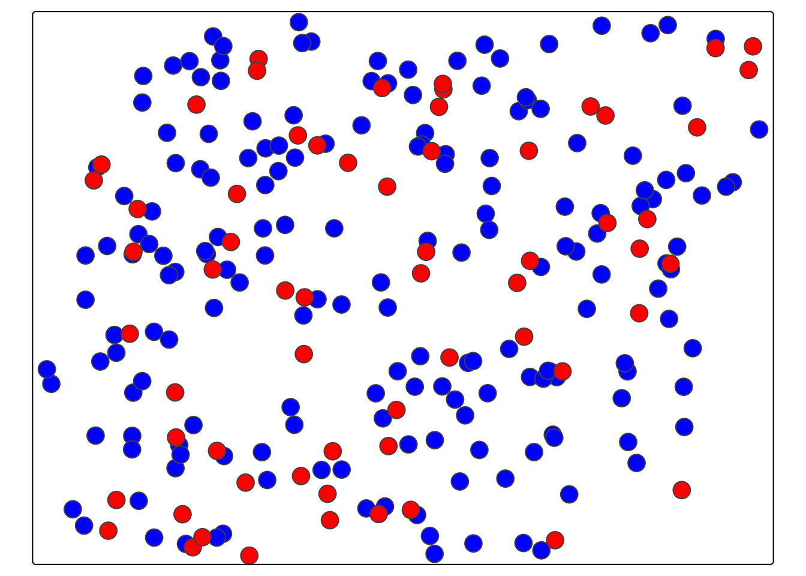

blad_estymacji = obserwowane - estymacja13 Ocena jakości estymacji
Na jakość estymacji wykonywanych metodą krigingu wpływa dopasowanie modelu oraz wybór metody estymacji. W celu wybrania najbardziej optymalnego modelu do analizy lub porównania wyników estymacji otrzymanych różnymi metodami (np. kriging prosty vs. kriging zwykły) stosuje się jedną z dwóch metod walidacji wyników estymacji:
- walidacja podzbiorem (ang. jackknifing)
- kroswalidacja (ang. crossvalidation)
Obie metody pozwalają na uzyskanie dla wybranych lokalizacji dwóch wartości analizowanej zmiennej: wartości obserwowanej oraz wartości estymowanej. Porównując wartość oberwowaną oraz estymowaną możemy obliczyć błąd estymacji. Błąd estymacji jest najprostszą formą oceny jakości estymacji obliczaną jako różnica między wartością obserwowaną oraz wartością estymacji. Błąd estymacji można analizować za pomocą mapy lub wykresów.
Do porównania wartości obserowanych oraz estymowanych można także wykorzystać szereg statystyk jakości estymacji. Do podstawowych statystyk ocen jakości estymacji należą:
- Średni błąd estymacji (MPE, ang. mean prediction error).
- Pierwiastek błędu średniokwadratowego (RMSE, ang. root mean square error).
- Współczynnik determinacji (R2, ang. coefficient of determination).
13.1 Walidacja podzbiorem
Walidacja podzbiorem polega na podziale zbioru danych na dwa podzbiory:
- treningowy - wykorzystywany do stworzenia semiwariogramu empirycznego, zbudowania modelu (zawiera więcej obserwacji)
- testowy - estymację wykonuje się dla punktów ze zbioru testowego, a następnie porównuje się wynik estymowany oraz rzeczywisty (zawiera mniej obserwacji).
Zaletą tego podejścia jest stosowanie danych niezależnych od estymacji do oceny jakości modelu. Wadą natomiast jest konieczność posiadania (relatywnie) dużego zbioru danych.
Walidacja podzbiorem składa się z kilku kroków:
- Podział zbioru danych na zbiór treningowy oraz testowy.
- Stworzenie semiwariogramu oraz dopasowanie modelu na podstawie punktów ze zbioru treningowego.
- Wykonanie estymacji dla punktów ze zbioru testowego.
13.1.1 Podział zbioru danych na zbiór treningowy oraz testowy.
library(sf)Linking to GEOS 3.10.2, GDAL 3.4.1, PROJ 8.2.1; sf_use_s2() is TRUEpunkty = read.csv("data/punkty.csv")
punkty = st_as_sf(punkty, coords = c("x", "y"), crs = "EPSG:2180")
punkty = na.omit(punkty)Na poniższym przykładzie zbiór danych dzielony jest używając funkcji initial_split() z pakietu rsample. Zap pomocą tej funkcji zostanie utworzony obiekt zawierający wydzielony podzbiór treningowy i testowy. Ważną zaletą funkcji initial_split() jest to, iż w zbiorze treningowym i testowym zachowane są podobne rozkłady wartości. W przykładzie użyto argumentu prop = 0.75, który oznacza, że 75% danych będzie należało do zbioru treningowego, a 25% do zbioru testowego. Następnie, korzystając ze stworzonego obiektu, budowane są dwa zbiory danych - treningowy (train) oraz testowy (test).
library(rsample)
set.seed(224)
punkty_podzial = initial_split(punkty, prop = 0.75, strata = temp)
train = training(punkty_podzial)
test = testing(punkty_podzial)Na poniższej mapie kolorem niebieskim zaznaczono 75% obserwacji tworzących zbiór treningowy, a kolorem czerwonym 25% obserwacji tworzących zbiór testowy.
library(tmap)
tm_shape(train) +
tm_symbols(fill = "blue") +
tm_shape(test) +
tm_symbols(fill = "red") +
tm_layout(legend.outside = TRUE)
13.1.2 Stworzenie semiwariogramu oraz dopasowanie modelu na podstawie punktów ze zbioru treningowego.
W kolejnym kroku zbiór treningowy (train) zostanie wykorzystany do utworzenia semiwariogramu empirycznego oraz dopasowania modelu. Semiwariogram empiryczny tworzony jest z wykorzystaniem funkcji variogram() z pakietu gstat. Do określenia typu modelu oraz jego podstawowych parametrów używa się funkcji vgm() z pakietu gstat. Funkcja fit.variogram() pozwala na automatyczne dopasowanie modelu w oparciu o wstępnie podane parametry.
library(gstat)
vario = variogram(temp ~ 1, data = train)
model = vgm(10, model = "Sph", range = 4000, nugget = 0.5)
fitted = fit.variogram(vario, model)
plot(vario, fitted)13.1.3 Wykonanie estymacji dla punktów ze zbioru testowego.
Kolejnym krokiem jest wykonanie estymacji dla punktów ze zbioru testowego (test) używając modelu zbudowanego na podstawie punktów ze zbioru treningowego. W przykładzie wykorzystamy metodę krigingu zwykłego (oridinary kriging).
W pierwszym etapie zostanie utworzony obiekt klasy gstat zawierający parametry krigingu. Jako argument locations podajemy zbiór treningowy (train) - tj. zbiór danych na podstawie, którego tworzony był model.
library(gstat)
ok_param = gstat(formula = temp ~ 1,
locations = train,
model = fitted,
nmax = 30)Do wykonania predykcji dla punktów ze zbioru testowego wykorzystuje się funkcję predict(). Funkcja predict() wymaga zdefiniowania dwóch argumentów: obiektu klasy gstat zawierającego parametry krigingu (w przykładzie obiekt ok_param) oraz nazwy zbioru danych zawierającego nowe lokalizacje, dla których ma być wykonana estymacja (w przykładzie obiekt test zawierający lokalizacje punktów w zbiorze testowym).
ok_test = predict(ok_param, test)[using ordinary kriging]Obiekt ok_test zawiera wyniki estymacji dla punktów ze zbioru testowego.
ok_testSimple feature collection with 62 features and 2 fields
Geometry type: POINT
Dimension: XY
Bounding box: xmin: 746342.4 ymin: 712723.3 xmax: 756869.5 ymax: 720852.7
Projected CRS: ETRF2000-PL / CS92
First 10 features:
var1.pred var1.var geometry
1 11.59223 4.134905 POINT (756801.6 720474.1)
2 13.92553 2.497318 POINT (749399.8 716955.2)
3 16.24785 2.203199 POINT (748766.6 713889)
4 15.75189 3.357429 POINT (749696.7 715940.2)
5 15.08617 2.831779 POINT (748974.3 720650.5)
6 22.07659 2.300183 POINT (746703.3 713611.8)
7 18.85014 2.477391 POINT (755052.4 716591.9)
8 14.31477 2.074113 POINT (750158.1 714389.2)
9 17.12052 1.922857 POINT (752022.7 715886.1)
10 13.10026 4.518624 POINT (756869.5 720852.7)13.1.4 Błąd estymacji
W celu obliczenia błędów estymacji do obiektu ok_test dodamy wartość obserwowaną temperatury.
ok_test$temp_obs = test$temp
head(ok_test)Simple feature collection with 6 features and 3 fields
Geometry type: POINT
Dimension: XY
Bounding box: xmin: 746703.3 ymin: 713611.8 xmax: 756801.6 ymax: 720650.5
Projected CRS: ETRF2000-PL / CS92
var1.pred var1.var geometry temp_obs
1 11.59223 4.134905 POINT (756801.6 720474.1) 9.941118
2 13.92553 2.497318 POINT (749399.8 716955.2) 12.919225
3 16.24785 2.203199 POINT (748766.6 713889) 19.247132
4 15.75189 3.357429 POINT (749696.7 715940.2) 14.522082
5 15.08617 2.831779 POINT (748974.3 720650.5) 14.707823
6 22.07659 2.300183 POINT (746703.3 713611.8) 23.677025Błąd estymacji obliczamy poprzez odjęcie od wartości obserwowanej (zmienna temp_obs) wartości estymowanej (zmienna var1.pred w obiekcie ok_test).
ok_test$blad_est_ok = ok_test$temp_obs - ok_test$var1.predWartości błędu estymacji można zwizualizować na mapie lub na wykresach.
13.1.4.1 Rozkład przestrzenny błędu estymacji
cuts = c(-5, -3, -1, 1, 3, 5)
tm_shape(ok_test) +
tm_symbols(col = "blad_est_ok", breaks = cuts, title.col = "", palette = "-RdBu", size = 1.5) +
tm_layout(main.title = "Błąd estymacji", legend.outside = TRUE)
Co oznacza ujemny, a co dodatni błąd estymacji?
13.1.4.2 Histogram: rozkład wartości błędu estymacji
library(ggplot2)
ggplot(ok_test, aes(blad_est_ok)) +
geom_histogram() +
xlab("Błąd estymacji") +
ylab("Liczebność") +
theme_bw()`stat_bin()` using `bins = 30`. Pick better value with `binwidth`.13.1.4.3 Wykres rozrzutu wartości obserwowanych oraz estymowanych
ggplot(ok_test, aes(var1.pred, temp_obs)) +
geom_point(size = 1.5) +
xlab("Estymacja") +
ylab("Obserwacja") +
xlim(5, 25) + ylim(5,25) +
coord_fixed() +
theme_bw()13.1.5 Statystyki jakości estymacji
13.1.5.1 Średni błąd estymacji
Średni błąd estymacji (MPE) można wyliczyć korzystając z poniższego wzoru:
\[ MPE=\frac{\sum_{i=1}^{n}(v_i - \hat{v}_i)}{n} \]
gdzie \(v_i\) to wartość obserwowana a \(\hat{v}_i\) to wartość estymowana.
Optymalnie wartość średniego błędu estymacji powinna być jak najbliżej 0.
W R do obliczenia średniego błędu estymacji służy funkcja mean()
MPE = mean(ok_test$blad_est_ok)
MPE[1] -0.0189876813.1.5.2 Pierwiastek błędu średniokwadratowego
Pierwiastek błędu średniokwadratowego (RMSE) jest możliwy do wyliczenia poprzez wzór:
\[ RMSE=\sqrt{\frac{\sum_{i=1}^{n}(v_i-\hat{v}_i)^2}{n}} \]
gdzie \(v_i\) to wartość obserwowana a \(\hat{v}_i\) to wartość estymowana.
Optymalnie wartość pierwiastka błędu średniokwadratowego powinna być jak najmniejsza.
RMSE = sqrt(mean((ok_test$temp_obs - ok_test$var1.pred) ^ 2))
RMSE[1] 1.43439413.1.5.3 Współczynnik determinacji
Współczynnik determinacji (R2) jest możliwy do wyliczenia poprzez wzór:
\[ R^2 = 1 - \frac{\sum_{i=1}^{n} (\hat v_i - v_i)^2}{\sum_{i=1}^{n} (v_i - \overline{v_i})^2} \]
gdzie \(v_i\) to wartość obserwowana, \(\hat{v}_i\) to wartość estymowana, a \(\overline{v}\) średnia arytmetyczna wartości obserwowanych.
Współczynnik determinacji przyjmuje wartości od 0 do 1, gdzie model jest lepszy im wartość tego współczynnika jest bliższa jedności.
W współczynnik determinacji możemy obliczyć obliczenie współczynnika korelacji liniowej Pearsona używając funkcji cor() oraz podsienienie wyniku do kwadratu.
R2 = cor(ok_test$temp_obs, ok_test$var1.pred) ^ 2
R2[1] 0.893891513.1.6 Estymacja w siatce
W sytuacji, gdy uzyskany model jest wystarczająco dobry, możemy również uzyskać estymację dla całego obszaru z użyciem funkcji interpolate().
library(terra)terra 1.8.60granica = vect("data/granica.gpkg")
siatka = rast(ext = granica, res = 50, crs = crs(granica))
siatkaclass : SpatRaster
size : 172, 229, 1 (nrow, ncol, nlyr)
resolution : 50, 50 (x, y)
extent : 745541.7, 756991.7, 712651.6, 721251.6 (xmin, xmax, ymin, ymax)
coord. ref. : ETRF2000-PL / CS92 (EPSG:2180) interpolate_gstat = function(model, x, ...) {
v = st_as_sf(x, coords = c("x", "y"), crs = st_crs(model$data[[1]]$data))
p = predict(model, v, ...)
st_drop_geometry(p)
}ok = interpolate(siatka, ok_param, fun = interpolate_gstat)[using ordinary kriging]
[using ordinary kriging]ok_crop = crop(ok, granica, mask=TRUE)tm_shape(ok_crop) +
tm_raster(col = c("var1.pred"), style = "cont", palette = "-Spectral")13.2 Kroswalidacja
W przypadku kroswalidacji te same dane wykorzystywane są do budowy modelu, estymacji, a następnie do oceny prognozy. Procedura kroswalidacji LOO (ang. leave-one-out cross-validation) składa się z poniższych kroków:
1 Zbudowanie matematycznego modelu z dostępnych obserwacji. 2. Dla każdej znanej obserwacji następuje:
- Usunięcie jej ze zbioru danych.
- Użycie modelu do wykonania estymacji w miejscu tej obserwacji.
- Wyliczenie reszty (ang. residual), czyli różnicy pomiędzy znaną wartością a estymacją.
- Podsumowanie otrzymanych wyników.
W pierwszej kolejności używając wszystkich danych budowany jest semiwariogram empiryczny oraz dopasowywany jest model.
vario = variogram(temp ~ 1, data = punkty)
model = vgm(model = "Sph", nugget = 0.5)
fitted = fit.variogram(vario, model)
plot(vario, model = fitted)Do wykonania kroswalidacji w R służy funkcja krige.cv() z pakietu gstat.
cv_ok = krige.cv(temp ~ 1,
locations = punkty,
model = fitted,
nmax = 30)W wyniku krowalidacji otrzymujemy obiekt zawierający wartości estymacji (var1.pred), wariancji krigingowej (var1.var), wartości obserwowane (observed), wartość błędu estymacji (residuals).
head(cv_ok)Simple feature collection with 6 features and 6 fields
Geometry type: POINT
Dimension: XY
Bounding box: xmin: 746963.5 ymin: 716731.6 xmax: 756801.6 ymax: 720474.1
Projected CRS: ETRF2000-PL / CS92
var1.pred var1.var observed residual zscore fold
1 14.98472 2.663551 13.852222 -1.1325010 -0.69391785 1
2 14.12990 1.984469 15.484209 1.3543097 0.96138160 2
3 12.59702 2.291935 14.324648 1.7276257 1.14116524 3
4 15.40495 1.348087 15.908549 0.5035949 0.43373286 4
5 11.08843 2.829173 9.941118 -1.1473123 -0.68210610 5
6 13.35676 2.515963 13.514751 0.1579941 0.09960671 6
geometry
1 POINT (750298 716731.6)
2 POINT (753482.9 717331.4)
3 POINT (755798.9 718828.1)
4 POINT (746963.5 717533.5)
5 POINT (756801.6 720474.1)
6 POINT (752698 718623.6)Podstawowe statystyki dla wartości obserwowanych, estymowanych oraz błędu estymacji.
summary(cv_ok) var1.pred var1.var observed residual
Min. : 8.897 Min. :1.154 Min. : 7.883 Min. :-5.097073
1st Qu.:12.299 1st Qu.:1.812 1st Qu.:11.953 1st Qu.:-0.962364
Median :14.737 Median :2.183 Median :14.937 Median : 0.009709
Mean :15.259 Mean :2.259 Mean :15.223 Mean :-0.036638
3rd Qu.:17.463 3rd Qu.:2.582 3rd Qu.:17.584 3rd Qu.: 0.861203
Max. :24.213 Max. :5.656 Max. :24.945 Max. : 4.388040
zscore fold geometry
Min. :-3.559661 Min. : 1.00 POINT :242
1st Qu.:-0.647834 1st Qu.: 61.25 epsg:2180 : 0
Median : 0.005204 Median :121.50 +proj=tmer...: 0
Mean :-0.012242 Mean :121.50
3rd Qu.: 0.599458 3rd Qu.:181.75
Max. : 3.129498 Max. :242.00 13.2.1 Statystyki jakości estymacji
Wykorzystując wyniki kroswalidacji można obliczyć statystyki jakości estymacji.
- średni błąd kwadratowy
MPE = mean(cv_ok$residual)
MPE[1] -0.03663776- pierwiastek średniego błędu kwadratowego
RMSE = sqrt(mean((cv_ok$residual) ^ 2))
RMSE[1] 1.418484- współczynnik determinacji
R2 = cor(cv_ok$observed, cv_ok$var1.pred) ^ 2
R2[1] 0.870976213.2.2 Rozkład przestrzenny błędu estymacji
Można także przeanalizować rozkład przestrzenny błędu estymacji.
cuts = c(-5, -3, -1, 1, 3, 5)
tm_shape(cv_ok) +
tm_symbols(col = "residual", breaks = cuts, title.col = "", palette = "-RdBu", size = 1) +
tm_layout(main.title = "Błąd estymacji", legend.outside = TRUE)13.2.3 Rozkład wartości błędu estymacji
library(ggplot2)
ggplot(cv_ok, aes(residual)) +
geom_histogram() +
xlab("Błąd estymacji") +
ylab("Liczebność") +
theme_bw()`stat_bin()` using `bins = 30`. Pick better value with `binwidth`.Jaki rozkład ma błąd estymacji?
13.2.4 Wykres rozrzutu
ggplot(cv_ok, aes(var1.pred, observed)) +
geom_point() +
xlab("Estymacja") +
ylab("Obserwacja") +
theme_bw()13.2.5 Estymacja w siatce
Podobnie jak w walidacji podzbiorem, gdy uzyskany model jest wystarczająco dobry, estymację dla całego obszaru uzyskuje się z użyciem funkcji interpolate()
library(terra)
granica = vect("data/granica.gpkg")
siatka = rast(ext = granica, res = 50, crs = crs(granica))
siatkaclass : SpatRaster
size : 172, 229, 1 (nrow, ncol, nlyr)
resolution : 50, 50 (x, y)
extent : 745541.7, 756991.7, 712651.6, 721251.6 (xmin, xmax, ymin, ymax)
coord. ref. : ETRF2000-PL / CS92 (EPSG:2180) interpolate_gstat = function(model, x, ...) {
v = st_as_sf(x, coords = c("x", "y"), crs = st_crs(model$data[[1]]$data))
p = predict(model, v, ...)
st_drop_geometry(p)
}ok_param = gstat(formula = temp ~ 1,
locations = punkty,
model = fitted,
nmax = 30)ok = interpolate(siatka, ok_param, fun = interpolate_gstat)[using ordinary kriging]
[using ordinary kriging]ok_crop = crop(ok, granica, mask=TRUE)tm_shape(ok_crop) +
tm_raster(col = c("var1.pred"), style = "cont", palette = "-Spectral")